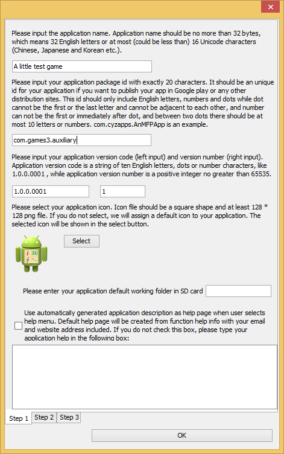

本质上，MFP游戏是一个命令行程序。它有一个入口点，也就是一个函数调用。该函数通过调用open_screen_display函数来启动游戏的主窗口。此窗口将出现在命令行对话窗口的前面。开发人员可以设置其标题，背景色，大小（仅在JVM上，在Android中始终覆盖整个屏幕）和横放还是竖立（仅限于Android）。此窗口将显示动画并接受用户的鼠标（或如果在Android中就是手指）的输入。如果开发人员希望阅读其使用详细信息，请在命令行对话窗口中键入help open_screen_display并回车。
open_screen_display返回一个窗口的句柄。该句柄是所有和该窗口相关的计算的起点。例如，以该句柄作为参数，可以通过调用get_display_size返回窗口大小，可以通过调用calculate_text_origin来计算文本的位置。此外，它还接受由绘图函数，例如draw_text和draw_oval，触发的绘画事件。也可以通过以它为参数调用pull_event函数来提取用户界面事件，例如鼠标移动。
更新主窗口意味着在窗口上重新绘制全部或部分图像。显然，如果游戏需要非常复杂的动画，将图像改变的部分定界以重绘将是一项不可能完成的任务。重绘整个图像是唯一的选择。但是，直接写入屏幕的速度非常慢。为了最大程度地减少直接屏幕写入，MFP在内存中缓冲屏幕的镜像，并在缓冲的镜像上绘制或者重绘元素。绘制完整个帧后，MFP然后将镜像投到屏幕上。这意味着一帧只需要写入屏幕一次。
上述方法可以避免在一帧中多次写屏幕。但是重画缓冲图像仍然不容易。例如，如果图像中有两个实心圆，一个静止，一个运动。在下一帧中，运动的圆移动到静止的圆的后方时，如何绘制图像？
MFP的解决方案是为每个要绘制的元素，例如一条线，一个椭圆形或一个图像，使用绘画事件。绘画事件有一个所有者用于告诉绘画事件调度程序谁拥有此绘画事件。绘画事件的所有者可以是字符串（即所有者名称），整数（即所有者ID）或NULL（表示系统拥有它），或者一个拥有两个元素的数组。第一个元素可以是基于字符串的所有者名称，也可以是基于整数的所有者ID，当然也可以是NULL。第二个元素是一个模仿时标的浮点数值。请注意，该浮点数不一定必须是真实的时标，它可以是任何双精度值。当开发人员尝试从绘画事件调度程序中删除此事件时，将使用它。
如果开发人员调用绘图函数，例如draw_line，draw_text或draw_rect，绘画事件所有者应作为函数的第一个参数传入。该函数不执行任何绘画工作。而是将其绘画事件挂接到主窗口的绘画事件队列中。在为此帧图像调用完所有相关绘画函数之后，开发人员应调用update_display函数。此函数以先到先服务的顺序将绘画事件队列中的所有元素绘制到缓冲的图像中，然后将缓冲的图像发布到主窗口中。
绘画事件队列的大小是无限的。如果没有从队列中丢弃绘画事件，则队列将不仅包括该帧的所有事件，还包括先前帧的所有事件。动画实现的关键是drop_old_painting_requests函数。此函数能从绘画事件队列中删除选定的绘画事件。此函数有两个参数。第一个是所有者信息，第二个是主窗口句柄。删除一个绘画事件的条件是，如果绘画事件的所有者与drop_old_painting_requests的所有者信息参数相同，并且绘画事件的所有者的时标早于drop_old_painting_requests的所有者信息的时标（即更小），则绘画事件将被丢弃。请注意，有时所有者参数不包含时标。在这种情况下，时标是绘图函数或drop_old_painting_requests函数被调用时的系统时间。
因此，要绘制动画，在开发人员调用绘图函数之后，必须在update_display函数调用之前先调用drop_old_painting_requests函数。只有这样，新一帧的事件才会绘制在主窗口上。开发人员还可以调整drop_old_painting_requests函数的owner参数的时标来实现某些效果，例如显示游戏角色的移动轨迹。
完成一帧的绘制后，别忘了先睡一会儿再进行下一次迭代，也就是调用一次sleep函数。否则，系统资源将被耗尽。
以下代码是在主窗口中绘制两个实心圆的动画的示例，一个是静态的，而另一个则围绕它旋转。
function rotate_around()
// open a screen display window for animation.
// 为动画打开一个显示窗口。
variable DISPLAYSURF = open_screen_display("Animation example", [255, 0, 0, 255], true, [1024, 728], true)
// we still need to get main window's size because if in Android, the window size set by open_screen_display
// has no effect. In this case main game window always take the whole screen.
// 我们还是需要获取游戏主窗口的尺寸。这是由于，如果是在安卓上运行，open_screen_display函数设置的窗口尺寸起不到任何作用，游戏
// 主窗口总是覆盖整个屏幕。
variable displaySize = get_display_size(DISPLAYSURF)
variable displayWith = displaySize[0], displayHeight = displaySize[1]
variable idxOfFrame = 0 //index of frame //帧的索引
// as circlel is static and it is not overlapped by other elements nor overlaps any other elements, draw_oval
// is only called once for it. This call will create a painting event for circle1 and this painting event will
// be executed by the update_display function each time it is called.
// 由于1号圆是不动的，并且它和别的图形没有重叠，所以只需要为它调用draw_oval函数一次。这个draw_oval函数调用将会生成一个绘图事件，
// 该绘图事件用于绘制1号圆，该绘图事件在每次update_display函数调用的时候都会被触发。
draw_oval("circle1", DISPLAYSURF, [displayWith / 2 - 32, displayHeight / 2 - 32], 64, 64, [255, 255, 0, 0], 0)
// circle1 has been in the centre of the screen, now make circle 2 rotate around circle 1
// 1号圆现在位于屏幕中央，我们让2号圆围着1号圆转
variable circle1To2Distance = 200
variable currentAngle = 0
while true
variable giEvent = pull_event(DISPLAYSURF)
if and(giEvent != Null, get_event_type_name(giEvent) == "GDI_CLOSE")
// quit // 游戏退出事件
break
endif
circle1To2Distance = 100 * (2 + sin(idxOfFrame * pi/180))
variable x2 = displayWith / 2 + circle1To2Distance * cos(currentAngle * pi/180)
variable y2 = displayHeight / 2 + circle1To2Distance * sin(currentAngle * pi/180)
variable angularVelocity = (1000000 / circle1To2Distance ** 3) * 5 // angular velocity in degree //角速度
currentAngle = currentAngle + angularVelocity
draw_oval(["circle2", idxOfFrame], DISPLAYSURF, [x2 - 24, y2 - 24], 48, 48, [255, 0, 255, 0], 0)
drop_old_painting_requests(["circle2", idxOfFrame], DISPLAYSURF)
update_display(DISPLAYSURF) // update game display window // 更新游戏显示窗口
// sleep a while to avoid exhausting computing resources. Note that in Android systems with weak CPU
// the sleeping interval should be shorter to give more time for game computing.
// 睡一会儿，避免占用所有的CPU资源，让别的进程得以有机会工作。注意有的安卓系统的CPU不是很强劲，睡眠的时间就需要更短一些
// 这样用于游戏计算的时间就可以更多一些。
sleep(100)
idxOfFrame = idxOfFrame + 1
loop
endf
以上示例代码演示了如何在主游戏窗口中绘制动画。但是，它不涉及游戏窗口和玩家之间的任何交互。如果开发人员想要对玩家的输入做出反应，则代码必须在启动主窗口后进入玩家事件处理模式。这是一个无限循环，直到玩家退出游戏为止。在每个循环中，应该调用pull_event函数从事件队列中返回一个事件，如果没有可用的事件，则返回null。如果是鼠标或手指事件，代码将通过更新主窗口来响应该事件。请注意，在现阶段还不支持键盘事件。有关pull_event函数的详细信息，请在命令行框中简单键入help pull_event。
通过pull_event函数获得玩家输入事件后，开发人员需要调用get_event_type函数来确定事件的类型。在现阶段，get_event_type函数支持以下事件：GDI_INITIALIZE（创建游戏窗口时触发，类型为1），GDI_CLOSE（关闭游戏窗口时触发，类型为10），WINDOW_RESIZED（当游戏窗口调整大小时触发，仅限于JVM平台，类型为21），POINTER_DOWN（在PC中按下鼠标按钮或在Android中按下用户的手指时触发，类型为102），POINTER_UP（在PC中当鼠标按钮弹起时或用户的手指从Android的触摸板移开时触发，类型为103），POINTER_CLICKED（在PC中当用户点击鼠标时或在带有触摸屏的设备中用户的手指点击触摸板时触发，类型为104），POINTER_DRAGGED（当用户拖动手指或鼠标时触发，类型为105。注意此事件与POINTER_SLIDED事件不同，它在拖动过程中是连续触发的），POINTER_SLIDED（当用户将手指或者鼠标拖拽到目标位置并释放手指或鼠标按钮时触发，类型为106。与POINTER_DRAGGED不同，此事件触发是一次性的），POINTER_PINCHED（当用户同时捏放两根手指时触发，仅适用于Android，类型为201）。
开发人员必须通过代表事件类型的整数找到对应的事件类型。比如如下语句
get_event_type(giEvent) == 106
用于判断是否玩家输入的事件类型是106，也就是POINTER_SLIDED。很显然，通过整数数值比较来判断事件类型不是一个很好的办法，所以，推荐使用函数get_event_type_name，该函数返回代表事件名称的字符串。对于上述例子，作为替换我们可以使用以下代码
get_event_type_name(giEvent) == "POINTER_SLIDED"
来鉴定事件类型是否是POINTER_SLIDED。
玩家输入事件除了带给开发人员事件的类型之外，还可以提供额外的信息，即事件的属性。额外的信息存储在类似字典的结构中，可以通过调用get_event_info函数来提取。此函数有两个参数，第一个是事件对象，第二个是额外信息的键值。不同的事件类型具有不同的额外信息。例如，POINTER_SLIDED事件携带五条额外信息，它们对应的键分别是"button"，"x"，"y"，"last_x"和"last_y"。开发人员可以键入help get_event_info来找出每种事件类型的额外信息是什么。
以下代码是一个示例，展示了如何通过用户的鼠标或手指的滑动来移动屏幕上的一个实心圆。它仅处理POINTER_SLIDED事件。但是其他事件处理方式应该是相似的。
function slide_pointer()
// open a screen display window for animation.
// 为动画打开一个显示窗口。
variable DISPLAYSURF = open_screen_display("Animation example", [255, 0, 0, 255], true, [1024, 728], true)
// we still need to get main window's size because if in Android, the window size set by open_screen_display
// has no effect. In this case main game window always take the whole screen.
// 我们还是需要获取游戏主窗口的尺寸。这是由于，如果是在安卓上运行，open_screen_display函数设置的窗口尺寸起不到任何作用，游戏
// 主窗口总是覆盖整个屏幕。
variable displaySize = get_display_size(DISPLAYSURF)
variable displayWith = displaySize[0], displayHeight = displaySize[1]
variable idxOfFrame = 0 //index of frame //帧的索引
variable circle1Left = displayWith / 2 - 32, circle1Top = displayHeight / 2 - 32
variable circle2Left = displayWith / 2 + 172, circle2Top = displayHeight / 2 - 255
draw_oval(["circle2", idxOfFrame], DISPLAYSURF, [circle2Left, circle2Top], 48, 48, [255, 0, 255, 0], 0)
draw_oval(["circle1", idxOfFrame], DISPLAYSURF, [circle1Left, circle1Top], 64, 64, [255, 255, 0, 0], 0)
while true
variable deltaX = 0, deltaY = 0
variable giEvent = pull_event(DISPLAYSURF)
if and(giEvent != Null, get_event_type_name(giEvent) == "GDI_CLOSE")
// quit // 游戏退出事件
break
elseif and(giEvent != Null, get_event_type(giEvent) == 106) // mouse or finger slided // 鼠标或手指滑动事件
// x1 and y1 are the coordinate when sliding starts, x2 and y2 are the coordinate when sliding finishes
// x1和y1是滑动开始时的坐标位置，x2和y2是滑动结束时的坐标位置
variable x1 = get_event_info(giEvent, "last_x")
variable y1 = get_event_info(giEvent, "last_y")
variable x2 = get_event_info(giEvent, "x")
variable y2 = get_event_info(giEvent, "y")
deltaX = x2 - x1
deltaY = y2 - y1
//print_line("x1 = " + x1 + " y1 = " + y1 + " x2 = " + x2 + " y2 = " + y2 + " deltaX = " + deltaX + " deltaY = " + deltaY)
circle2Left = circle2Left + deltaX
circle2Top = circle2Top + deltaY
// draw circle 2 first, then circle 1, this ensures that circle 1 is in front of circle 2.
// 先画2号圆，再画1号圆，这样可以保证1号圆在2号圆的前面。
draw_oval(["circle2", idxOfFrame], DISPLAYSURF, [circle2Left, circle2Top], 48, 48, [255, 0, 255, 0], 0)
draw_oval(["circle1", idxOfFrame], DISPLAYSURF, [circle1Left, circle1Top], 64, 64, [255, 255, 0, 0], 0)
drop_old_painting_requests(["circle2", idxOfFrame], DISPLAYSURF)
drop_old_painting_requests(["circle1", idxOfFrame], DISPLAYSURF)
endif
update_display(DISPLAYSURF) // update game display window // 更新游戏显示窗口
// sleep a while to avoid exhausting computing resources. Note that in Android systems with weak CPU
// the sleeping interval should be shorter to give more time for game computing.
// 睡一会儿，避免占用所有的CPU资源，让别的进程得以有机会工作。注意有的安卓系统的CPU不是很强劲，睡眠的时间就需要更短一些
// 这样用于游戏计算的时间就可以更多一些。
sleep(30)
idxOfFrame = idxOfFrame + 1
loop
endf
除源代码以外游戏通常包含许多图像和声音文件。MFP提供了用于加载图像（即load_image ）和播放声音（即play_sound ）的函数。如果要在JVM上玩游戏，开发人员只需告诉这些功能文件的路径即可。但是，在Android中，情况则非常不同。
在Android中MFP游戏会在两种不同的情况下运行。一种类似于在JVM上，辅助文件保存在Android设备的ROM中，该ROM与PC的硬盘相对应。在这种情况下，代码仅需要文件的路径。在另一种情况下，MFP游戏已编译为APK包。这时，辅助文件将保存在APK包assets资料夹中的resource.zip包中，如下图所示。MFP需要使用一组函数从assets资料夹的压缩资源包中加载数据。它们是load_image_from_zip和play_sound_from_zip。要了解这些函数的用法，只需在MFP命令行框中键入help，然后输入函数名称即可。

但是，Android APK的复杂性在运行应用之前就存在。Android APK是已编译的MFP脚本。MFP编译器不知道脚本需要哪些辅助文件以及将文件放置在何处。因此，开发人员需要将该信息显式传递给MFP编译器。这可以通过使用MFP标注@build_asset和函数copy_to_resource来实现。copy_to_resource是MFP编译器函数，这意味着它不在mfp引用空间中，而在mfp_compiler引用空间中。在运行时，mfp_compiler引用空间不在默认的引用空间栈中，因此函数copy_to_resource不可见。但是，在构建APK时，标注可以看到mfp_compiler引用空间。
函数copy_to_resource具有两个参数。第一个参数是游戏辅助文件或文件夹的源路径。请注意，如果游戏作为MFP应用运行，则辅助文件的源路径不再是字符串，因为该文件实际上已压缩在APK的资源包中。在这种情况下，辅助文件的源路径是一个三元素数组，第一个元素是zip类型，如果是APK包中的assets资料夹中的resource.zip压缩包，则为1，否则为0。第二个元素是资源压缩包，即assets资料夹中的resource.zip文件，的路径，第三个元素是资源压缩包中的辅助文件的压缩路径。函数copy_to_resource的第二个参数是游戏辅助文件或文件夹的目标路径。如果脚本将要被打包在安卓APK中，则目标路径是APK包assets资料夹中resource.zip文件中的压缩路径。要查看@build_asset和copy_to_resource的详细用法，只需键入help @build_asset和help ::mfp_compiler::annotation::build_asset::copy_to_resource（copy_to_resource必须包含其整个引用空间路径，因为引用空间mfp_compiler不在默认引用空间栈中）。
当游戏需要跨设备运行时，例如两个玩家使用不同的设备玩同一个游戏，标注@build_asset也是必需的。这和打包APK是相同的逻辑。该代码告诉MFP编译器哪些辅助文件或文件夹需要复制到远端，以及目标路径是什么。由于MFP专门为每个远程会话（或者用MFP术语，沙盒）创建一个临时文件夹，因此开发人员需要调用函数get_sandbox_session_resource_path来获取临时文件夹中资源文件夹的路径，然后添加上相对资源文件夹的目标路径，如下图所示。要查看函数get_sandbox_session_resource_path的详细用法，只需在MFP命令行框中键入help get_sandbox_session_resource_path。

以下代码段演示了如何正确地将辅助文件（即food.png）复制到目标位置，以及如何在运行时加载辅助文件。请注意，作为标注，@build_asset语句在编译时执行，即当我们从MFP脚本构建APK包或MFP脚本正在发送源代码和辅助文件到远程设备时执行。另请注意，@build_asset语句很长，因此使用MFP的换行符（空格后跟下划线字符）将其分为三行。
@build_asset语句调用函数iff来处理三种情况不同的情况。首先是编译发生在远程会话（MFP术语中的沙盒）中。当远程会话启动另一个远程会话，从而需要将辅助文件传输到新的远程会话时，可能会发生这种情况。在这种情况下，函数is_sandbox_session()返回true，并且辅助文件必须位于临时目录的资源子文件夹中，该资源子文件夹的路径由函数 get_sandbox_session_resource_path()返回。第二种情况是在MFP应用程序中进行编译。当MFP应用启动远程会话并准备传输辅助文件时，就是这种情况。在这种情况下，函数is_mfp_app()返回true。同样，如上所述，这种情况下的源路径不是字符串，而是一个三元素数组。数组的第一个元素为1，表示源辅助文件位于Android应用的APK中。第二个元素是一个函数调用，即get_asset_file_path("resource")，它返回Android应用程序assets资料夹中resource.zip文件的路径。最后一个元素是源辅助文件在android应用程序assets资料夹中resource.zip压缩包中的压缩路径。第三种情况是，当MFP脚本在JVM或Android作为独立脚本（即，不是作为Android应用程序）运行时进行编译。因为在此示例中，辅助文件在这种情况下与源脚本位于同一文件夹中，所以调用函数get_src_file_path()返回源脚本的完整路径，然后调用函数get_upper_level_path获取包含源脚本和辅助文件的文件夹的路径。要想获取iff函数的详细信息，可以在命令行中键入help iff并回车。
@build_asset copy_to_resource(iff(is_sandbox_session(), get_sandbox_session_resource_path() + "images/food.png", _
is_mfp_app(), [1, get_asset_file_path("resource"), "images/food.png"], _
get_upper_level_path(get_src_file_path()) + "food.png"), "images/food.png")
if is_sandbox_session()
foodImage = load_image(get_sandbox_session_resource_path() + "images/food.png")
elseif is_mfp_app()
foodImage = load_image_from_zip(get_asset_file_path("resource"), "images/food.png", 1)
else
foodImage = load_image(get_upper_level_path(get_src_file_path()) + "food.png")
endif
@build_asset语句之后的代码在运行时执行。相似地，这些代码也考虑了三种情况。第一种情况是在远程会话也就是MFP术语中的沙盒中运行。在这种情况下，food.png文件位于临时目录的资源文件夹中的名为images的文件夹中。资源文件夹的路径由函数get_sandbox_session_resource_path()返回。第二种情况是作为MFP应用程序运行。在这种情况下，辅助文件（即food.png）位于应用程序assets资料夹的resource.zip文件中。函数调用get_asset_file_path("resource")返回Android应用程序assets资料夹中resource.zip文件的路径。"images/food.png"是源辅助文件到Android应用程序assets资料夹中resource.zip压缩包的压缩路径。第三种情况是该游戏作为独立脚本在JVM或Android上运行。在此示例中，在这种情况下，辅助文件与源脚本位于同一文件夹中，所以调用函数get_src_file_path()返回源脚本的完整路径，然后调用函数get_upper_level_path获取包含源脚本和辅助文件的文件夹的路径。请注意，仅在第2种情况下，即游戏作为Android应用程序运行，辅助文件才作为zip条目保存在zip压缩包中。在其他两种情况下，辅助文件是硬盘或ROM中的普通文件。因此，在第2种情况下，调用函数load_image_from_zip，而在其他两种情况下，调用函数load_image来加载图像。要获取这两个函数的详细使用信息，只需在MFP命令行中输入help load_image_from_zip和help load_image即可。
以下代码向开发人员展示如何在游戏中包含辅助文件。该游戏与前一个拖放圆圈示例基本相同。但是，此示例没有绘制两个圆，而是绘制了一个胡萝卜和一个白色的兔子。玩家可以像上一个示例中拖动第二个圆圈一样拖放兔子。
function game_with_auxiliaries()
// open a screen display window for animation.
// 为动画打开一个显示窗口。
variable DISPLAYSURF = open_screen_display("Animation example", [255, 0, 0, 255], true, [1024, 728], true)
// we still need to get main window's size because if in Android, the window size set by open_screen_display
// has no effect. In this case main game window always take the whole screen.
// 我们还是需要获取游戏主窗口的尺寸。这是由于，如果是在安卓上运行，open_screen_display函数设置的窗口尺寸起不到任何作用，游戏
// 主窗口总是覆盖整个屏幕。
variable displaySize = get_display_size(DISPLAYSURF)
variable displayWith = displaySize[0], displayHeight = displaySize[1]
variable carrotImage, rabbitImage, backgroundSnd
// now load a carrot image. It will be drawn in the main window.
// 现在装入一个胡萝卜的图像。该图像将会被绘制在游戏主窗口中。
@build_asset copy_to_resource(iff(is_sandbox_session(), get_sandbox_session_resource_path() + "images/carrot.png", _
is_mfp_app(), [1, get_asset_file_path("resource"), "images/carrot.png"], _
get_upper_level_path(get_src_file_path()) + "carrot.png"), "images/carrot.png")
if is_sandbox_session()
carrotImage = load_image(get_sandbox_session_resource_path() + "images/carrot.png")
elseif is_mfp_app()
carrotImage = load_image_from_zip(get_asset_file_path("resource"), "images/carrot.png", 1)
else
carrotImage = load_image(get_upper_level_path(get_src_file_path()) + "carrot.png")
endif
// now load a rabbit image. It will be drawn in the main window and will be moved by finger or mouse.
// 现在装入一个小白兔的图像。该图像将会被绘制在游戏主窗口中并且将会被手指或者鼠标拖动。
@build_asset copy_to_resource(iff(is_sandbox_session(), get_sandbox_session_resource_path() + "images/rabbit.png", _
is_mfp_app(), [1, get_asset_file_path("resource"), "images/rabbit.png"], _
get_upper_level_path(get_src_file_path()) + "rabbit.png"), "images/rabbit.png")
if is_sandbox_session()
rabbitImage = load_image(get_sandbox_session_resource_path() + "images/rabbit.png")
elseif is_mfp_app()
rabbitImage = load_image_from_zip(get_asset_file_path("resource"), "images/rabbit.png", 1)
else
rabbitImage = load_image(get_upper_level_path(get_src_file_path()) + "rabbit.png")
endif
// now play the background music. It will be repeated until player exits.
// 现在开始演奏音乐。注意会连续不断地演奏，直到退出游戏。
@build_asset copy_to_resource(iff(is_sandbox_session(), get_sandbox_session_resource_path() + "sounds/littleRabbit.mp3", _
is_mfp_app(), [1, get_asset_file_path("resource"), "sounds/littleRabbit.mp3"], _
get_upper_level_path(get_src_file_path()) + "littleRabbit.mp3"), "sounds/littleRabbit.mp3")
if is_sandbox_session()
backgroundSnd = play_sound(get_sandbox_session_resource_path() + "sounds/littleRabbit.mp3", true)
elseif is_mfp_app()
backgroundSnd = play_sound_from_zip(get_asset_file_path("resource"), "sounds/littleRabbit.mp3", 1, true)
else
backgroundSnd = play_sound(get_upper_level_path(get_src_file_path()) + "littleRabbit.mp3", true)
endif
variable idxOfFrame = 0 //index of frame //帧的索引
variable carrotLeft = displayWith / 2 - 32, carrotTop = displayHeight / 2 - 32
variable rabbitLeft = displayWith / 2 + 172, rabbitTop = displayHeight / 2 - 255
// set scaling ratio 1.0, 1.0 so that we do not scale rabbit image
// 将小白兔图像的缩放比例设置为1.0，1.0，保持原有尺寸。
draw_image(["rabbit", idxOfFrame], DISPLAYSURF, rabbitImage, rabbitLeft, rabbitTop, 1.0, 1.0)
// set scaling ratio 2.0, 2.0 so that we enlarge the carrot image
// 将胡萝卜图像的缩放比例设置为2.0，2.0，扩大原有尺寸。
draw_image(["carrot", idxOfFrame], DISPLAYSURF, carrotImage, carrotLeft, carrotTop, 2.0, 2.0)
while true
variable deltaX = 0, deltaY = 0
variable giEvent = pull_event(DISPLAYSURF)
if and(giEvent != Null, get_event_type_name(giEvent) == "GDI_CLOSE")
// quit. Don't forget to stop music to play // 游戏退出事件。不要忘了关掉声音。
stop_sound(backgroundSnd)
break
elseif and(giEvent != Null, get_event_type(giEvent) == 106) // mouse or finger slided // 鼠标或手指滑动事件
// x1 and y1 are the coordinate when sliding starts, x2 and y2 are the coordinate when sliding finishes
// x1和y1是滑动开始时的坐标位置，x2和y2是滑动结束时的坐标位置
variable x1 = get_event_info(giEvent, "last_x")
variable y1 = get_event_info(giEvent, "last_y")
variable x2 = get_event_info(giEvent, "x")
variable y2 = get_event_info(giEvent, "y")
deltaX = x2 - x1
deltaY = y2 - y1
//print_line("x1 = " + x1 + " y1 = " + y1 + " x2 = " + x2 + " y2 = " + y2 + " deltaX = " + deltaX + " deltaY = " + deltaY)
rabbitLeft = rabbitLeft + deltaX
rabbitTop = rabbitTop + deltaY
// draw rabbit first, then carrot, this ensures that carrot is in front of rabbit.
// 先画小白兔，再画胡萝卜，这样可以保证胡萝卜在小白兔的前面。
draw_image(["rabbit", idxOfFrame], DISPLAYSURF, rabbitImage, rabbitLeft, rabbitTop, 1.0, 1.0)
draw_image(["carrot", idxOfFrame], DISPLAYSURF, carrotImage, carrotLeft, carrotTop, 2.0, 2.0)
drop_old_painting_requests(["rabbit", idxOfFrame], DISPLAYSURF)
drop_old_painting_requests(["carrot", idxOfFrame], DISPLAYSURF)
endif
update_display(DISPLAYSURF) // update game display window // 更新游戏显示窗口
// sleep a while to avoid exhausting computing resources. Note that in Android systems with weak CPU
// the sleeping interval should be shorter to give more time for game computing.
// 睡一会儿，避免占用所有的CPU资源，让别的进程得以有机会工作。注意有的安卓系统的CPU不是很强劲，睡眠的时间就需要更短一些
// 这样用于游戏计算的时间就可以更多一些。
sleep(30)
idxOfFrame = idxOfFrame + 1
loop
endf
上面的例子与其他示例不同，开发人员不能简单地将以上代码复制并粘贴到命令行对话窗口中然后运行它，因为它需要辅助文件。另外，它调用了函数get_src_file_path()，当通过命令行调用而不是在源文件中进行编码时，该函数返回null。点击此处以下载游戏示例的压缩包。解压缩它，然后将game_examples文件夹复制到JMFPLang.jar文件旁边的scripts文件夹中，如下图所示。

上述代码所在函数，即game_with_auxiliaries，位于game_examples文件夹的game_fundamental子文件夹中的game_fundamental.mfps文件中。其辅助文件（即carrot.png，rabbit.png和littleRabbit.mp3）也位于同一文件夹中，如下图所示。要启动该示例，只需启动JMFPLang.jar文件并在命令行中运行 game_fundamental::game_with_auxiliaries()。

此示例也可以编译为Android APK。启动JMFPLang.jar，选择“工具”菜单，然后选择“创建MFP应用”子菜单。按照步骤1到步骤3的说明进行操作。请注意，在步骤2中，函数名称应为game_fundamental::game_with_auxiliaries，不能包括括号或反括号。该功能的简短说明也可以留为空白。在第3步中，如果开发人员想要发布APK，请创建新密钥或使用现有密钥。否则，只需选择测试用密钥。正确填写所有输入字段后，单击“确定”按钮即开始编译APK安装包。生成的APK位于JMFPLang.jar文件旁边的apks文件夹中。
在装有JAVA的电脑上运行该示例，效果如下。

如果将该示例编译为安卓应用，运行效果如下。

以下链接包括更复杂的示例，它们都是真正的游戏而不是简单的代码展示。